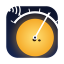

最終更新 / Last updated: 2026-11-09
Space weather data: NOAA Space Weather Prediction Center (SWPC), Boulder, CO, National Oceanic and Atmospheric Administration (NOAA), U.S. Department of Commerce.
SoraGauge JP は NOAA から承認・保証を受けたアプリではありません。NOAA が公開するデータを、内容を変えずに表示しています。速報値は後で訂正されることがあります。
| 表示する内容 | 原生成機関・観測 | NOAA SWPC の提供元(URL) |
|---|---|---|
| NOAA スケール(R / S / G)の現在値と予報 | NOAA SWPC | products/noaa-scales.json |
| X線フラックス・フレア(最新・7日) | NOAA GOES-18 衛星(XRS) | json/goes/primary/xrays-6-hour.json, xray-flares-latest.json, xray-flares-7-day.json |
| フレアの発生確率(1〜3日) | NOAA SWPC(予報) | json/solar_probabilities.json |
| Kp 指数(3時間値・1分推定)・Kp 3日予報 | NOAA SWPC(推定惑星 K 指数) | products/noaa-planetary-k-index.json, json/planetary_k_index_1m.json, products/noaa-planetary-k-index-forecast.json |
| 太陽風(速度・密度・Bz・Bt) | DSCOVR / ACE 衛星(NOAA・NASA)を NOAA が地球の位置へ伝搬 | products/geospace/propagated-solar-wind-1-hour.json |
| 警報・注意報・見込み | NOAA SWPC | products/alerts.json |
| 黒点群(活動領域: 番号・位置・面積・McIntosh 分類・磁場分類・フレア確率) | NOAA SWPC / 米空軍(SWO)の Solar Region Summary | json/solar_regions.json |
| 黒点数(日別・月平均)・太陽周期の予測 | NOAA SWPC(SWO の数え方) | json/solar-cycle/swpc_observed_ssn.json, observed-solar-cycle-indices.json, predicted-solar-cycle.json |
| 3日予報(原文) | NOAA SWPC | text/3-day-forecast.txt |
すべて https://services.swpc.noaa.gov/ の下にあります。NOAA の情報は米国政府の著作物としてパブリックドメインで公開されています(NOAA SWPC Disclaimer)。
HF運用の画面などにある「良・可・注意・不良・閉」や「HF への注意」の文章は、NOAA の観測値と公式スケールをもとに SoraGauge JP が独自にまとめた目安で、NOAA の公式な予報・判定ではありません。
Space weather data courtesy of NOAA Space Weather Prediction Center (SWPC), Boulder, CO, U.S. Dept. of Commerce. GOES X-ray data: NOAA GOES-18. Solar wind: DSCOVR/ACE (NOAA/NASA). Solar Region Summary: NOAA SWPC / USAF. Sunspot numbers are NOAA SWPC's own counts (not the International Sunspot Number from SILSO). SoraGauge JP is not affiliated with or endorsed by NOAA. Information from NOAA is in the public domain; real-time values are preliminary and subject to revision. The "SoraGauge JP advisory" (band-by-band HF hints) is our own interpretation, not an official NOAA forecast.